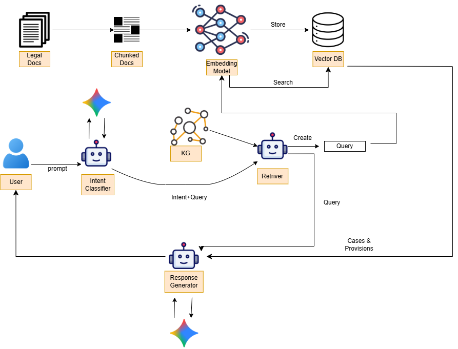
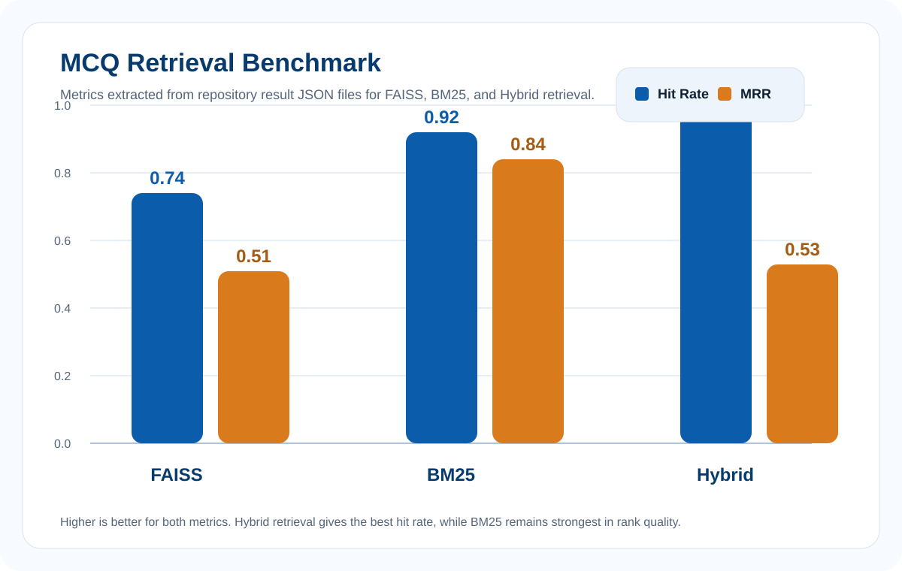
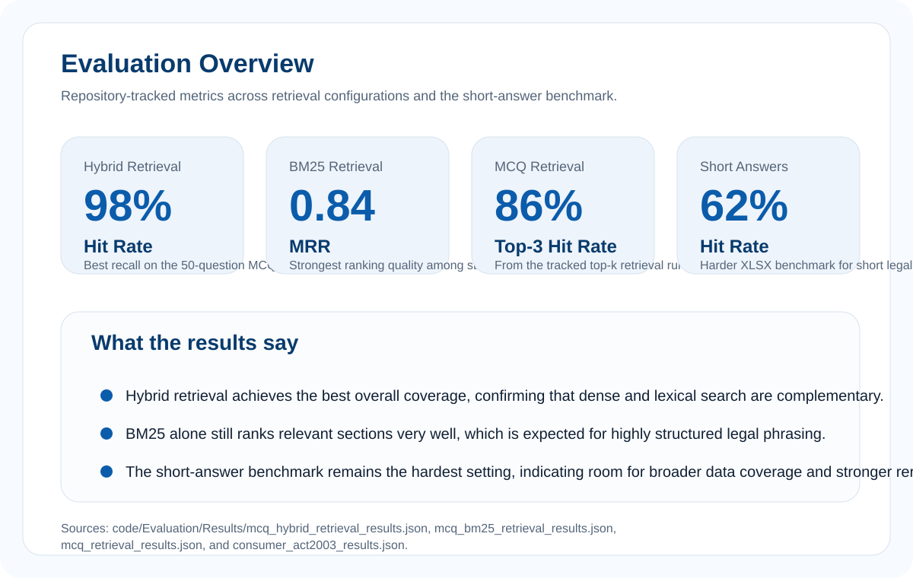

Abstract
General-purpose language models are unreliable for legal queries in low-resource languages like Sinhala — they hallucinate sections, misquote provisions, and provide no source traceability. This project grounds answer generation entirely on retrieved legal context from Sri Lankan commercial law, initially focused on the Consumer Affairs Authority Act No. 9 of 2003. Gemini handles intent classification and answer generation in Sinhala, while a hybrid pipeline combining FAISS dense retrieval, BM25 lexical search, and cross-encoder re-ranking handles candidate selection — exposed via a Flask API with structured JSON responses, citation grouping, and in-browser PDF download. The result is an auditable, citation-grounded legal assistant for everyday citizens.
Methodology
Query Input
User submits a Sinhala legal question via the Flask API or web frontend
Intent Classification
Gemini classifies intent: section lookup, hybrid search, title search, or non-legal fallback
Hybrid Retrieval
FAISS dense + BM25 lexical retrieval runs in parallel; results are merged and deduplicated
Re-rank + Generate
Cross-encoder re-ranks top-k; Gemini generates a Sinhala answer citing only retrieved context
Data Preparation & Chunking
Acts are parsed from PDFs and cleaned. Section and subsection boundaries are detected using regex patterns, then recursive character splitting creates retrieval units that preserve legal structure — ensuring no section spans multiple unrelated chunks.
Index Construction
build_faiss.py
converts chunks into LangChain documents and stores them in a FAISS index with rich metadata:
act name, section number, section title, and source file path for PDF download.
Intent-Aware Retrieval Routing
The intent classifier routes each query to the most appropriate retrieval path — section number lookup, full hybrid FAISS/BM25 search, section title search, or a polite non-legal fallback when the query is outside scope.
Re-ranking & Answer Generation
After merging and deduplicating candidates, a cross-encoder scores each chunk against the query jointly. Gemini then produces a structured Sinhala answer citing only the top-ranked retrieved context — never hallucinating beyond what was retrieved.

Experiment Setup & Implementation
Application Layer
app.py
exposes three endpoints: synchronous answer generation, streaming answers for large responses,
and PDF download by source. The frontend renders structured answer cards, inline citation
badges with section numbers, and a PDF download flow — all over standard REST.
Core Orchestration Agent
collab_agent.py
orchestrates the full retrieval pipeline, optionally expands full sections when a summary
chunk is top-ranked, and logs per-query performance metrics to
retrieval_log.jsonl
for offline evaluation.
Evaluation Methodology
Two benchmarks were used: an MCQ benchmark testing whether the correct section appears in the top-k retrieved chunks (hit rate), and a short-answer XLSX evaluation scoring the generated Sinhala answer against reference answers by section coverage and accuracy.
Tech Stack
Python · Flask · LangChain · FAISS · BM25 (rank_bm25) · Sentence-Transformers (cross-encoder) · Google Gemini API · PDFMiner · Pandas · Vanilla JS frontend. Deployable as a single-process Flask app with pre-built FAISS indices.
Results & Analysis


Lexical matching (BM25) substantially outperforms dense-only retrieval on rigid legal phrasing — legal text contains precise terminology that dense embeddings may paraphrase away. This validates the hybrid design decision.
Hybrid + re-ranking maximises recall while filtering noise. In legal QA, missing the correct section is costlier than over-retrieving — making the 98% hybrid hit rate the most operationally significant result.
Team
 Supervisor
Supervisor
Dr. Damayanthi Herath
 Supervisor
Supervisor
Ms. Yasodha Vimukthi
 Team Member
Team Member
T.L.B Mapagedara
 Team Member
Team Member
R.J Yogesh